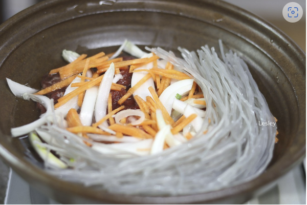

Home Korean Food Recipe
* 소불고기

재료 준비:
-2인분 분량-
-소고기 불고깃감 300g
-당면 1/2줌
-쑥갓1줌, 양파 1/4개, 대파1/3대, 버섯류1/2줌
-당근, 소금, 설탕 약간
-다진 마늘 1스푼, 맛술 1스푼, 진간장4스푼, 참기름 1/2스푼, 배즙50ml(없다면 설탕사용)
-후춧가루 약간
-다시마 2장
-
Baking Start !
1단계 : 준비한 당면을 미지간한 물에 담그고 약 30분간 불려준다.

2단계 : 300ml의 미지근한 물에 다시마 2장을 넣고 20분 이상 불려서 육수를 준비해준다.
3단계 : 소고기 불고깃감 300g을 치킨타월 위에 넓게 펼쳐서 올리고 핏물을 빼준다.
4단계 : 준비한 배즙, 다진마늘, 맛술, 진간장, 참기름, 후춧가루를 넣고 섞어만든 소스를 고기와 조물조물 밑간하고 15분정도 숙성시킨다.
5단계 : 쑥갓 반으로 잘라놓고, 대파 송송 썰고, 당근, 양파를 채 썰어둔다.
6단계 : 뚝배기나 전골냄비 등에 준비한것들을 모두(버섯, 쑥갓, 대파 제외) 골고루 섞어서 센불에 넣어준다.
참고 블로그 이동7단계 : 물이 끓으면 중불로 줄여서 5분정도 면을 익히고. 나머지 재료들 모두와 기호에맞게 소금으로 간을 맞추면 완성된다.
-
Baking Start !
1단계 : 김치, 대파, 두부 등을 썰어서준비한다.
2단계 : 돼지고기를 키친타월에 올려놓고 핏물을 제거한다.
3단계 : 냄비에 물 600~700g과 고기를 넣고 강불로 끓인다.
4단계 : 새우젓 한수픈을 넣고 뚜껑을 반만열고 푹푹끓여 고기에 간이 배게한다.
5단계 : 준비한 김치, 국간장, 고춧가루, 마늘, 설탕을 모두 넣고 간을 맞추며 중불로 끓인다.
참고 블로그 이동6단계 : 두부와 대파, 고추를 모두 넣고 끓이면 완성된다.
-
Baking Start !
1단계 : 돼지고기를 큼지막하게 썰어준다.
2단계 : 양파, 대파, 청양고추, 당근, 양배추를 원하는 크기로 자른다.
3단계 : 팬에 식용유 5숟갈을 두르고 대파를 볶아준다.
4단계 : 앞다리살을 넣고 살살 볶아준다.
5단계 : 어느정도 고기가 익으면 준비한 설탕, 고춧가루, 고추장, 후추, 다진 마늘, 참기름 약간, 진간장, 물을 모두 넣어준다.
6단계 : 고추장과 고춧가루가 녹기 시작하면 강불에서 빠르게 조리한다
7단계 : 남은 야채, 넣고 싶은 재료 넣고 살짝 볶으면 완성된다.
참고 영상 이동
* 김치찌개

재료 준비:
-3~4인분-
-삼겹살 약 200g
-김치 3컵
-청양고추 1~2개
-홍고추 반개
-대파 2/3개
-두부 반모
-다진마늘, 고춧가루, 새우젓, 국간장 1스푼씩
-설탕 약간(0.2~0.3스푼)
-물 600~700g
* 제육볶음
재료 준비:
-2~3인분-
- 돼지 앞다리살 500g
- 대파 2대
- 양파 반개
- 양배추 한줌
- 청양고추 3개
- 당근 1/6개
- 고추장, 고춧가루 1~2숟가락
- 진간장 2숟갈
- 설탕 1.5숟갈
- 다진 마늘 1숟갈
- 물 90ml
-식용유 5숟갈